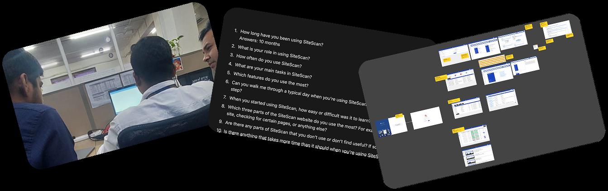
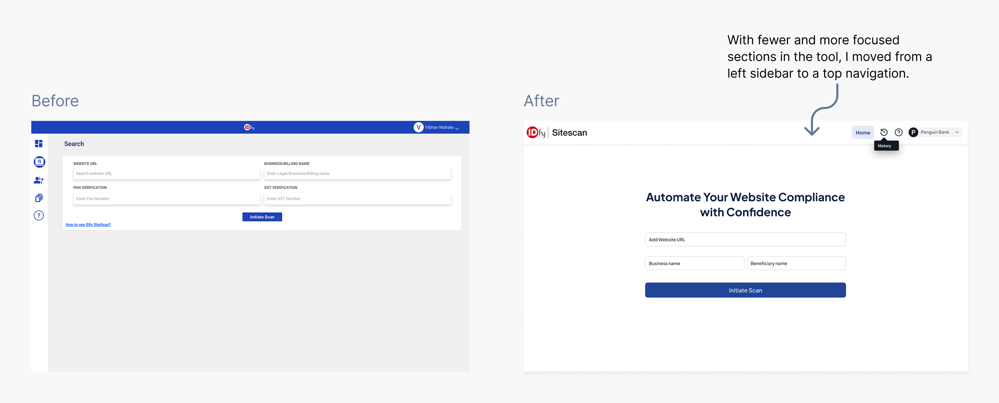
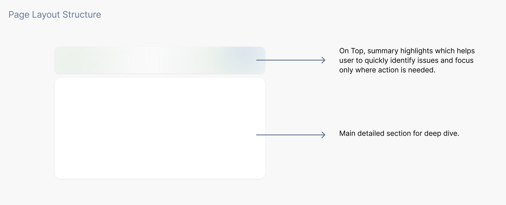
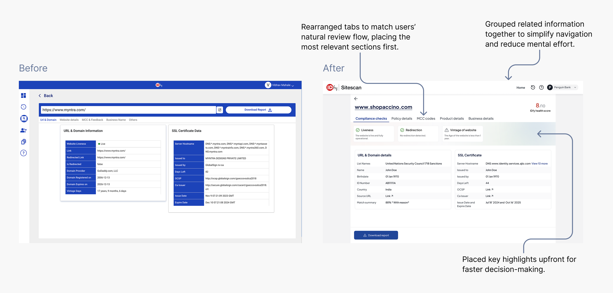
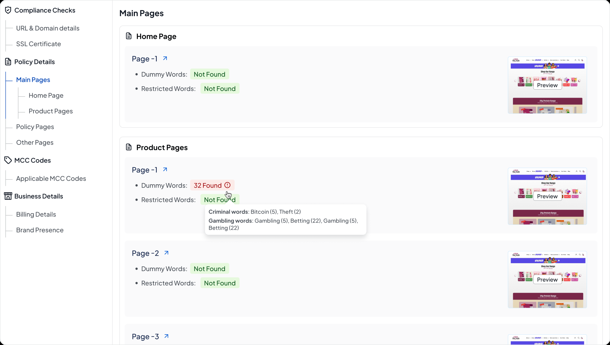
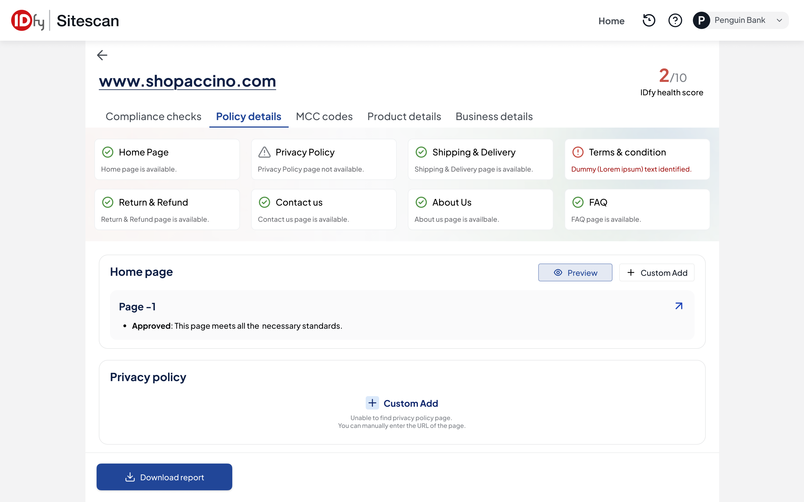
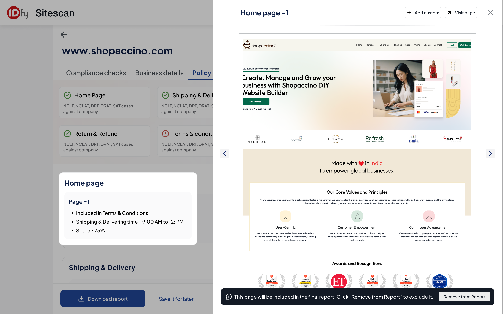

01 · Context
What is SiteScan?
When payment companies onboard online merchants, they need to check if the
merchant's website meets all regulatory compliance requirements. IDfy built
SiteScan for exactly this — an automated compliance scanner.
02 · Problem
The tool had become an afterthought.
The current SiteScan tool was slow, hard to use, and often unreliable. This led to:
😤
Frustrated Users
Agents didn't believe the scan results. They'd check the site manually first, then run the scan just to get something to show.
🔁
Repeated Manual Effort
Manual checks first, SiteScan second — just to generate proof. The automation tool was being used as a screenshot generator.
📉
Low Trust in System
Agents ended up doing manual checks first and used SiteScan only to generate proof — defeating its purpose as an automation tool.
03 · Who Are the Users?
Operations agents are the core users.
Their workflow involves:
Step 01
Review
Reviewing a merchant's website
→
Step 02
Scan
Using SiteScan to scan for required compliance elements
→
Step 03
Download
Downloading the report as proof
→
Step 04
Submit
Submitting results internally or to clients if something is missing
Why it matters to users
Users handle 15–20 verifications daily, often under time pressure.
For them, efficiency is critical. So we aimed to build a solution that:
01
Reduces frustration and confusion
02
Builds confidence in decision-making
03
Aligns with their habits and daily flow
04
Enables higher task volume with lower cognitive effort
Why it matters to business
🚀
Accelerates Merchant Onboarding
Reduces turnaround time (TAT) and speeds up verification workflows.
📈
Boosts Tool Adoption
Empowers agents to work more efficiently, improving productivity and data reliability.
🤝
Improves Client Retention
Faster, more accurate onboarding leads to better merchant satisfaction and stronger relationships.
04 · Research
The issue wasn't one broken thing.
It was everything quietly working against the user.

Research approach — auditing the tool and interviewing ops agents
Before any user interviews, I audited the tool myself. I went through the full flow
end-to-end, from a first-time user's perspective. I do this before every project
— it means that by the time I'm in a conversation with users, I'm not asking broad questions.
I know exactly what to press on.
I then interviewed top-performing ops agents at Razorpay — individually, in their actual
working context. Not a focus group. Not a survey. Just conversations and observation.
What I Found
01
Low Trust
Agents didn't believe the scan results. So they'd check the site manually first, then run the scan to get something to show. The tool had gone from being the source of truth to being an afterthought.
02
Data Loss
Switching tabs mid-flow, or accidentally closing the browser, wiped everything. When you're doing this 15 times a day, losing your place is genuinely demoralising.
03
Clutter
There were tabs no one opened, sections that didn't map to any real task, colours and icons fighting each other. The UI demanded attention without earning it.
04
Visual Clarity
Agents couldn't tell what was clickable, what was auto-filled, or what an action would do. Every step involved a small moment of doubt. Multiply that by 20 merchants a day and it adds up.
Users didn't need more features. They needed the tool to be reliable, and give them accuracy.
05 · V1 — Cleanup & Task Flow Alignment
Clear the clutter, simplify workflows, align with the user's mental flow.
Scan Initiation Page
To streamline the experience, I removed non-essential inputs and unused sections like
'Dashboard' and 'Add Users' that created noise without adding real value to the user's
workflow. I reduced heavy shadows, cluttered icons, and overwhelming colours to create
a cleaner, calmer interface.

V1 — Streamlined scan initiation with non-essential inputs removed
Results After Scan
You see the summary grid → you identify the problem area → you scroll to that section → you take action (Preview or Custom Add). That's a coherent task flow.

V1 — Results view with compliance checks and policy pages
The results broke down into two key areas:
✅
1. Compliance Checks
Automated verification of regulatory requirements on the merchant's website.
📄
2. Policy Pages
Verification of required policy pages (returns, shipping, privacy, terms) and their content.
06 · Iteration & Feedback
Two concepts, one clear winner.
Concept 1

Concept 1 — Sidebar navigation approach
👎
Overwhelming Sidebar Navigation
It gives the impression of depth but actually makes it harder to know where you are or where to go next.
👎
Missing Action Clarity
What do I do with "Invalid"? The next step is never obvious.
👎
Decorative Previews
The Preview thumbnails on the right are a genuinely good idea — seeing the actual page gives context — but they're too small to be useful and feel decorative rather than functional.
👎
Inconsistent Status Tags
Status communication tags exist but feel inconsistent — different patterns in different places, no unified visual language.

Concept 1 feedback — sidebar navigation and action clarity issues
Concept 2 (Winner)

Concept 2 — Summary grid approach
👍
Instant Full Picture
Summary grid gives the agent an instant read of the full picture before they scroll into anything. Problems are visible immediately, and the agent knows where to focus before touching the detail below.
👍
Visually Quieter & Trustworthy
White cards, clean typography, subtle borders. The UI stopped fighting for attention.
👍
Tags Doing Real Work
The compliance tags (Approved, Needs Improvement, Non-Compliant) are doing real work — the agent never has to interpret raw data to understand the status.
⚠️
Generic Page Naming
The "Page-1", "Page-2" naming is generic and slightly confusing. If an agent needs to go back and reference something, "Page-1 under Shipping & Delivery" is not a clear mental anchor. Even showing the actual page URL or a truncated page title would make this far more useful.
3. Preview (Policy Page)

Preview — Scan findings shown alongside the policy page screenshot
When a user clicks on Preview, they see the full page but have no idea what they're
looking for or what the scan found. They end up manually reading the whole page —
which is exactly the behaviour I'm trying to eliminate.
Since we had backend limitations for new developments, instead of highlighting
directly on the screenshot, I brought the scan findings alongside it. Users can now
look at the screenshot with context and cross-reference visually themselves. It's not
as precise as highlighted regions, but it gives them enough to do their job without
switching back and forth.
07 · V2 — Decision Support & Habit Shaping
One screen that changed how agents used the tool.
V1 made the tool easier to use. Earlier I focused on UI hygiene — decluttering
the interface and aligning flows with user behaviour. While necessary, these changes
didn't fundamentally alter how users interacted with the tool.
In V2, I introduced one key shift: the Summary Page.
One screen that loads right after a scan finishes, giving a full picture before you go
anywhere else. What's clean. What's flagged. Where you need to look. On one screen.
It sounds like a small thing. But it fundamentally shifted the interaction. Instead of using
the tool to confirm what they'd already found manually, agents started opening it
first — because it was now actually telling them something useful upfront. That's
the shift we were after.

V2 Summary Page — the single screen that shifted agent behaviour
08 · Usability Testing After V2
Testing with real users, real tasks.
🔍 Objective: To evaluate whether the newly introduced Summary Page and
backend improvements (scan speed & accuracy) were actually improving the experience.
🧪 Testing Setup: Tested with 5–7 frequent users from Razorpay
and 2–3 internal users. Users were asked to perform real-world tasks on the staging environment.
Collected a mix of qualitative feedback (what they said, liked, or found confusing) and
behavioural observations (where they struggled, hesitated, or skipped).
💡 What worked well
✅
Summary Page
Helped agents quickly identify compliance issues.
✅
Highlighted Sections in Policies
Reduced scanning effort significantly.
✅
More Accurate MCC Codes
Reduced manual checking — agents trusted the categorisation.
✅
Smoother Navigation Flow
Navigation felt smoother and more intuitive.
✅
Individual Highlights
Boosted confidence in overall results.
✅
Cleaner UI
UI felt cleaner and easier on the eyes.
What still needed work
⚠️
Icon Meanings
Some users were still confused about what certain icons meant.
⚠️
Policy Page Clutter
Policy page layout felt cluttered with too much scrolling.
⚠️
No Exact Location Highlighting
In the Policy Page, issues are listed by page name but not highlighted at the exact location (line or paragraph), forcing users to manually scan and locate the problem areas.
✏️
Quick Wins Shipped
Some minor improvements — like adding clear labels to icons — were directly pushed to production to enhance usability quickly.
09 · Impact
Results that shipped.
60%
TAT reduction — users could now identify and resolve compliance issues faster
4–5★
NPS ratings improved from mostly 1–2 stars, reflecting higher satisfaction
10 · Key Takeaways
What this project taught me.
01
Design alone isn't enough. Real improvement happens when design and backend work hand-in-hand. You can't gain user trust with just a cleaner UI — the functionality has to deliver.
02
Understand the mental model, not just screens. It's crucial to understand the user's mental model and workflow — not just map screens. Agents think in terms of "merchant decisions", not "scan tabs".
03
Habits take time to shift. Especially with operations folks, you can't flip their habits overnight. They've been doing things a certain way for months — change needs to feel natural, not forced.
04
Observation beats assumptions. Sometimes, users can't articulate what's broken — but their behaviour tells you everything. Observation over assumptions, always.